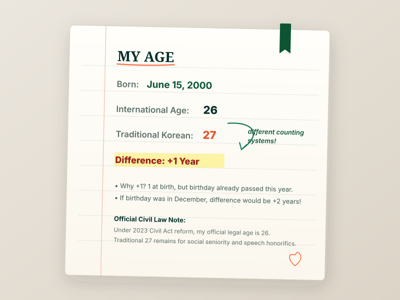

Your Korean Age Result Explained
If you just entered your date of birth into the calculator above, you likely observed that your Traditional Korean Age is either 1 or 2 years higher than your standard International Legal Age.
This discrepancy does not reflect a mathematical error or a biological change. Rather, it occurs because East Asian chronological traditions and Western civil calendars answer fundamentally different questions:
- International Age (*만 나이* - Man Nai) measures the exact duration of elapsed time since your birth, starting at zero and incrementing only when your birthday arrives.
- Traditional Korean Age (*세는 나이* - Seneun Nai) counts the number of distinct calendar years in which you have lived, counting your initial year of gestation as one and incrementing every single January 1st alongside the entire population.
In everyday South Korean social life, your traditional age is not just an arbitrary integer; it represents your generational birth cohort. Koreans born within the same calendar year belong to the same peer group (dong-gap - 동갑). In schools, university cohorts, and corporate workplaces, this shared calendar year establishes immediate social equality, allowing peers to speak casually without formal honorific prefixes.
Conversely, even a single calendar year of difference traditionally required the younger person to address the elder with respectful titles such as Hyeong (older brother) or Noona (older sister). This cultural imperative explains why asking "What is your Korean age?" or "What year were you born?" is often one of the first conversational inquiries in Korean social interactions.
To explore the historical origin of this cultural calendar, read our comprehensive foundational article on how the traditional Korean age system worked, or learn the manual arithmetic in our guide on how to calculate Korean age.
Why Is My Korean Age Different From My International Age?
The difference between your two ages comes down to two specific calendar conventions: when counting starts, and when increments happen.
Because traditional age gains a year every January 1st while international age waits for your birthday, you experience two distinct phases during every calendar year:
- Before your birthday occurs this year: Your Korean age is 2 years older than your international age.
- On and after your birthday occurs this year: Your Korean age is 1 year older than your international age.
For a deep comparison of these anniversary dynamics, see our guide on Korean age vs international age.
See How Birth Date Changes the Result
Notice how someone born in January experiences the +1 difference for nearly the entire year, whereas someone born in December experiences the +2 difference until the very last day of the year. Try selecting these preset examples:
January 15, 2000
Because January 15 has already occurred earlier this calendar year, International Age is 26. Traditional Korean Age is 27 (2026 − 2000 + 1). The current difference is +1 year.
Birth-Date Difference Matrix (All 12 Months)
The table below demonstrates how the difference between Traditional Korean Age and International Age fluctuates across the 12 calendar months for an individual born in the year 2000, evaluated over the course of the year 2026:
| Birth Month | Traditional Korean Age | International Age (Before Birthday) | International Age (After Birthday) | Active Difference |
|---|---|---|---|---|
| January | 27 Years | 25 Years | 26 Years | +1 Year (Birthday passed) |
| March | 27 Years | 25 Years | 26 Years | +1 Year (Birthday passed) |
| June | 27 Years | 25 Years | 26 Years | +1 Year (Birthday passed) |
| September | 27 Years | 25 Years | 26 Years | +1 Year (Birthday passed) |
| October | 27 Years | 25 Years | 26 Years | +2 Years (Before Birthday) |
| December | 27 Years | 25 Years | 26 Years | +2 Years (Before Birthday) |
*Notice that Traditional Korean Age remains constant at 27 throughout the entire year 2026, while International Age steps from 25 to 26 on the person's birthday.
Representative Milestone Birth Years
Rather than calculating manually, reference this benchmark table comparing international legal age and traditional Korean age across major milestone birth years:
| Birth Year | Born Date Example | International Age | Traditional Korean Age | Year Age (연 나이) |
|---|---|---|---|---|
| 1990 | January 15, 1990 | 36 Years | 37 Years | 36 Years |
| 1995 | June 15, 1995 | 31 Years | 32 Years | 31 Years |
| 2000 | June 15, 2000 | 26 Years | 27 Years | 26 Years |
| 2005 | January 15, 2005 | 21 Years | 22 Years | 21 Years |
| 2010 | June 15, 2010 | 16 Years | 17 Years | 16 Years |
To look up any exact year, decade, or Korean Zodiac animal combination, explore our complete interactive matrix on the Korean Age Birth Year Matrix.

Is This the Age Used Officially in South Korea?
No. The traditional Korean age result calculated on this page is primarily useful today for cultural understanding, social etiquette, K-pop fandom, and historical context.
On June 28, 2023, South Korea’s National Assembly enacted amendments to the Civil Act mandating that Full Age (*만 나이* - Man Nai) is the exclusive standard for government forms, legal contracts, passports, banking agreements, and clinical medicine.
To understand the legal reform, judicial context, and statutory exceptions for military conscription and school entrance, read our dedicated legal report: Did Korea Change Its Age System? Understanding the 2023 Reform.
How Do You Say "How Old Am I?" in Korean?
When international users search for "how old am i in korean", they often seek the actual spoken Korean phrase rather than the mathematical arithmetic. In the Korean language, age is expressed using native Korean counting numbers paired with the counter 살 (*sal*):
- "How old are you?" (Polite standard): Myeot sar-ieyo? (몇 살이에요?)
- "How old are you?" (Honorific / Formal to elders): Yeonse-ga eotteoke doeseyo? (연세가 어떻게 되세요?)
- "I am 26 years old": Seumul-yeoseot sar-ieyo (스물여섯 살이에요).
- "What year were you born?" (Common social alternative): Myeot nyeon-saeng-ieyo? (몇 년생이에요?)
It is also worth noting that the Korean language uses two distinct number systems for age: Native Korean numbers (Hana, Dul, Set...) paired with the counter sal (살) are used in everyday spoken conversation up to age 99, while Sino-Korean numbers (Il, I, Sam...) paired with the Hanja counter se (세) are reserved for official administrative documents, formal speeches, or centenarians.
For a complete pronunciation guide, honorific speech levels, and Sino-Korean vs Native-Korean number systems, look out for our upcoming guide: How to Say Your Age in Korean: Age, Numbers & Common Phrases.
Frequently Asked Questions
Find Your Korean Age Now
Calculate your exact cultural and legal age numbers in seconds.
Explore the Korean Age Knowledge Base
Continue your exploration of East Asian chronology, legal standards, and arithmetic formulas across our dedicated guides:
📖 What is Korean Age?
Cultural origins, Confucian hierarchy, East Asian age reckoning, and social etiquette.
Practical Arithmetic🧮 How to Calculate Korean Age
Exact mathematical formula, birthday cutoff mechanics, and step-by-step worked examples.
Comparative Analysis⚖️ Korean Age vs International Age
In-depth side-by-side comparison explaining the +1 vs +2 year differences and calendar timing.
2023 Statutory Reform🏛️ Did Korea Change Its Age System?
The June 28, 2023 Civil Act reform, official full age standard, and remaining exceptions.
Interactive Utility🇰🇷 Korean Age Calculator (Full Tool)
Full interactive calculator with Baek-il milestones, Zodiac signs, and birth year matrices.